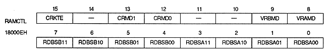

The rotary scroll screen has two screens, RBG0 and RBG1, and RBG0 is displayed when only one screen is displayed. When RBG1 is displayed, RBG0 must also be displayed. In that case, all normal scroll screens cannot be displayed.
When displaying the scrolling screen, the image data (pattern name table and character pattern table or bitmap pattern) cannot be used in common with the image data for the normal scroll screen. RBG0 and RBG1 image data cannot be shared. In addition, the image data of the rotating scroll screen must be stored in a separate VRAM. Of the image data, the RBG1 pattern name table is stored in VRAM-B1, and the character pattern table is stored in VRAM-B0.
When RBG0 requires coefficient data only for each line, the coefficient table can be stored in any bank of VRAM, but when it is required for each dot, it must be stored in a bank different from the image data. Not.
∙ There are a screen display enable register and a RAM control register in the registers that control the display of the rotary scroll screen. The screen display enable register controls screen display and transparency code. The register contents are the same as the normal scroll screen. For details, please refer to “ 4.1 Screen Display Control ”.
■ RAM control register
The RAM control register specifies the VRAM bank division, the purpose of use of the VRAM on the rotary scroll screen, and the color RAM mode. This is a 16-bit readable / writable register located at 18000EH. The value is cleared to 0 after power-on or reset, so be sure to set it.

Color RAM coefficient table enable bit : Color RAM coefficient table enable bit (CRKTE), bit 15